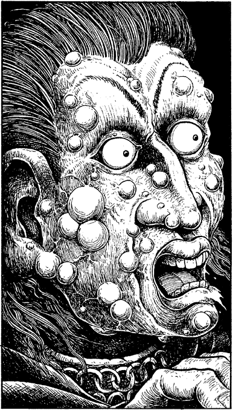

65
Quietly you agree upon a plan of action. Paido and Trost will approach the necromancer while you guard the stairs. If he should evade your companions, he’ll have you to contend with before he can escape from the hold.
Unhurriedly, you leave your seat and walk to the tap-room stairs. When you are in position your companions rise and advance towards the stranger who remains motionless, seemingly engrossed in his black book. Trost draws his sword and challenges the man, demanding that he state his name and the purpose of his journey. It is a fatal mistake. The man looks up from his book, his grey eyes suddenly aglow with a terrible red fire. Trost screams. His face has become a mass of horrible, erupting boils. As he falls to the floor, Paido strikes, his sword a shimmering lance of blue steel forged by the Elder Magi. His attack is lightning fast, but the necromancer counters his blow on the edge of his blade. Sparks explode, showering the tap-room with glowing fragments. The crowd begins to cheer, but their cheers turn to screams of terror when the necromancer summons a new defence.
